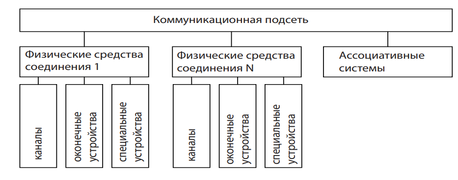
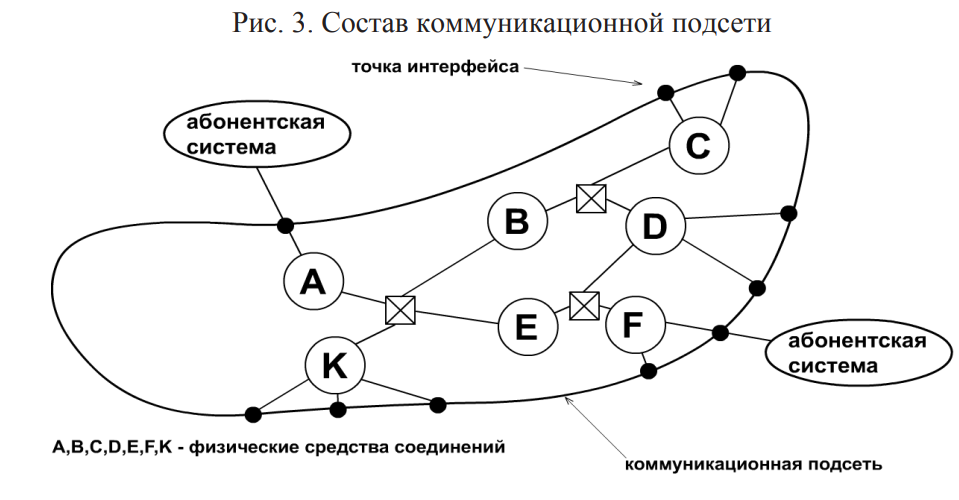
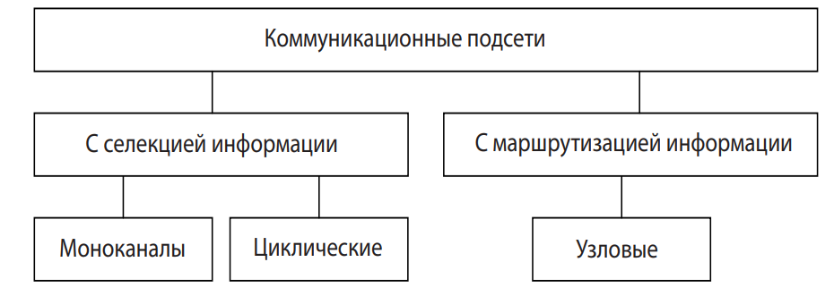

Коммуникационные подсети (КП) Коммуникационная подсеть предназначена для передачи информации между большим числом абонентских систем и создается на основе стандартных компонентов (рис. 3): – физических средств соединения (ФСС); – ассоциативных систем (АС). 6 В состав коммуникационной подсети входят один или несколько комплексов фи зических средств соединений. В последнем случае они соединяются при помощи АС. Комплекс ФСС состоит из одного либо группы параллельно прокладываемых каналов передачи данных. ФСС имеют также оконечные устройства, образующие интерфейсы для подключения к этим средствам абонентских систем. Одна из возможных структурных схем коммуникационной подсети показана на рис. 4.
 Виды коммуникационных подсетей различаются способами доставки информации конкретным адресатам. Их классификация представлена на рис. 5. Коммуникационная подсеть с селекцией 7 информации характеризуется тем, что любой блок данных передается от одной системы-отправителя всем абонентским системам, которые проверяют адрес его назначения. Система, которой адресован блок, принимает его, остальные отвергают этот блок. В результате происходит селекция информации. Примером таких сетей являлись сети пейджинговой связи, а в настоящее время процедура селекции информации используется в каналах управления базовых станций сотовой связи. В сетях эфирного вещания и кабельного телевидения также широко используется метод селекции информационных потоков, передаваемых в различных полосах частот.
Подсети с селекцией информации делятся на две группы: моноканальные и циклические. Отличия между ними заключаются в следующем: – в моноканальной подсети каждый посланный блок данных попадает ко всем абонентским системам практически одновременно, с задержкой, не превышающей времени физического распространения сигнала между абонентскими станциями; – в циклической подсети блоки информации доставляются абонентским системам последовательно (по очереди), проходя мимо каждой из них.